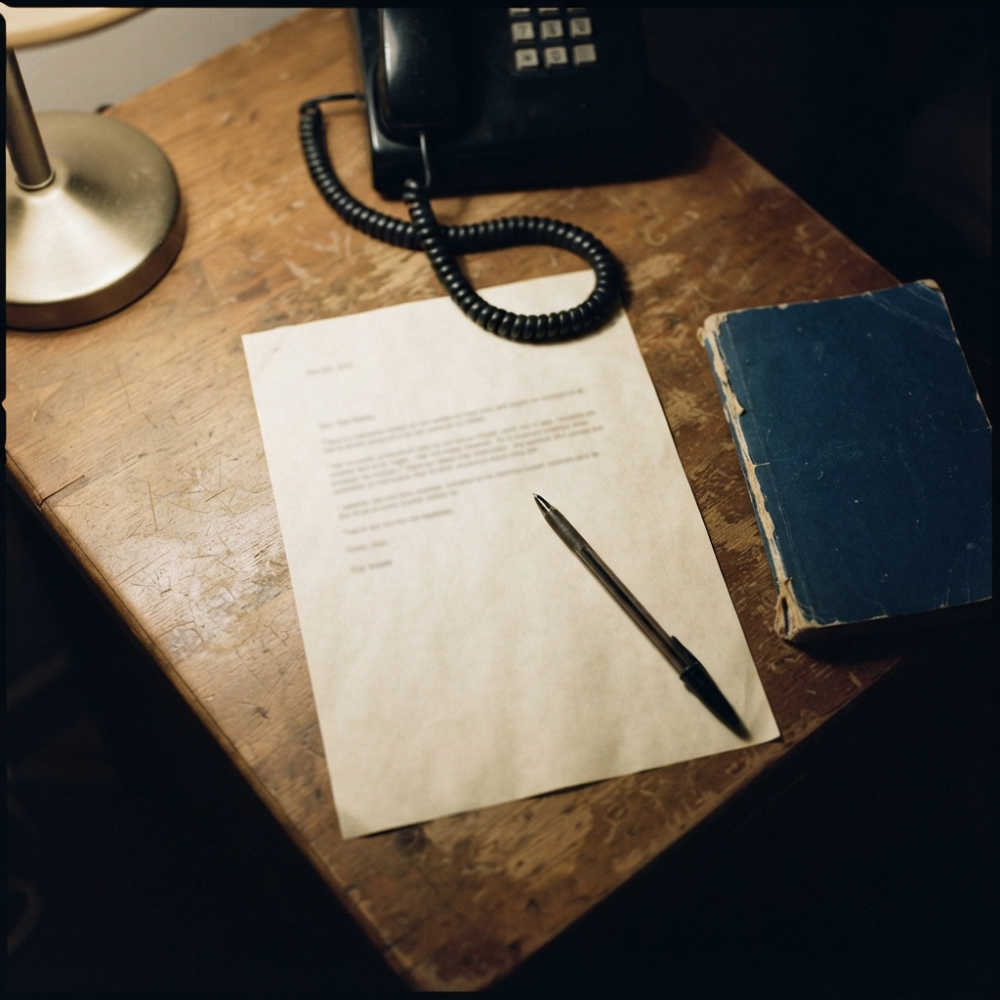

Radar N°2
Carta del editor
14 — 21 AGO 2026
Lo que vi esta semana
el
buzón
se queda

El escritorio donde se arma el número.
La carta primero, el teléfono al lado.
La carta primero, el teléfono al lado.
Soy Phil. Esta es la segunda revista que te escribo.
Esta semana, en Twitter, me paré en una clínica que metió IA en la recepción y en el cobro: reagenda, llama al que no vino y mira el seguro. Yo me quedé en otra imagen: el teléfono en el buzón y la silla vacía. Si 7 de cada 10 no dejan recado, el hueco de la agenda no es un “no contesté”: ya se fue.
Por eso este número. Te dejo lo que vi: el buzón que se come la silla, el negocio que ChatGPT no nombra, y los papás que dejan de vivir en tres chats. Al final, el ranking de modelos de esta semana.
El hueco de la agenda no se decide en el chat. Se decide cuando nadie contesta.
La línea del número
En este número
04 secciones · 7 notas · 1 tablero
03
ChatGPT no te nombra
Tres notas de la semana: la búsqueda, los papás y la confirmación.
04
La silla vacía
El tema: una clínica puso IA en la recepción y en el cobro.
05
40 minutos menos
Más notas: la huella en el texto, el aviso y el examen dictado.
08
Quién contesta primero
El tablero de IA de la semana, con capturas reales.
Phil
Revista semanal
Radar · N°2
Radar · N°2
02